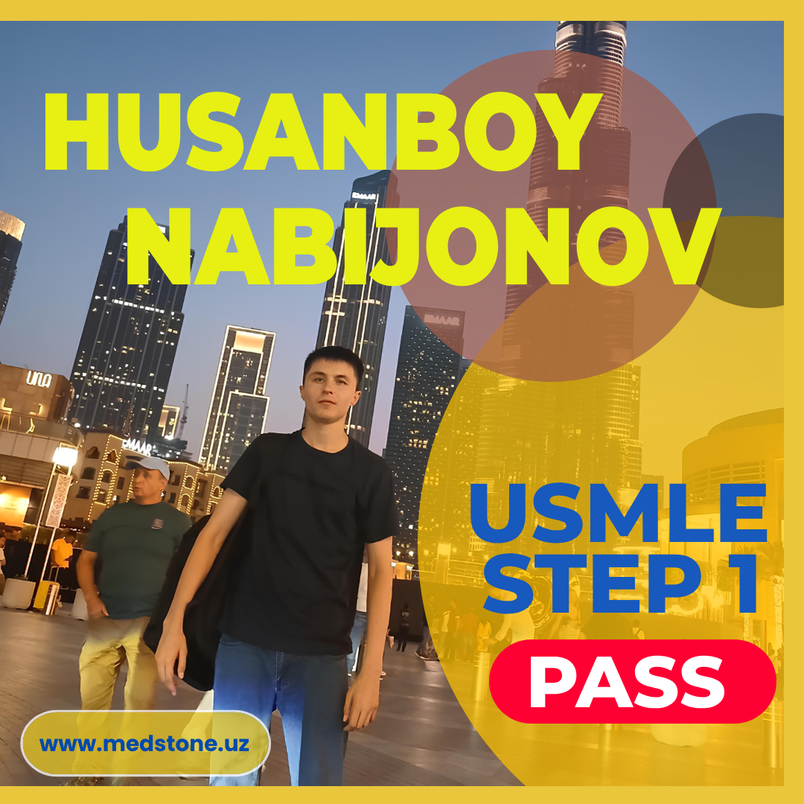

Pass bo'lish uchun alohida qobiliyat bo'lishi shart emas, kuchli discipline, qattiq mehnat va sabr kerak xolos.
Assalomu aleykum barchaga!
Men Husanboy Nabijonov Samarqand Davlat Tibbiyot Universiteti bitiruvchi talabasiman. Bugun step 1 imtihoniga tayyorgarlik jarayonimni sizlar bilan bo'lishmoqchiman.
STUDY PREPARATION
Tayyorgarligimga umumiy 2.5 yil vaqt ketdi. Tayyorgarligimni medstone jamosi asoschisi ustozimiz Shohrux Botirov maslahatlari va ko'rsatmalari bilan boshladim. Til bilish darajam ancha pastligi tufayli ko‘p hollarda tashlab ketgim kelardi lekin ustozim Shohrux Botirov har doim menga dalda berar shu joyidan o‘tib olsa barchasi yaxshi bo'lishini uqtirib har doim og‘ir damlarda men bilan bo‘lardi. Til o'rganish va step 1 ga tayyorlanishni parallel olib ketganligi sababli jarayon 2.5 yilga cho'zilib ketdi. So‘ngi 8 oy self study qildim sababi vaqtimni o‘zim boshqarardim. Guruh bilan ishlash har doim ajoyib bo‘lgan, ustoz bilan shug‘ullanganim uchun ko'pchilik qilgan xatolarni takrorlamasligimga sabab bo‘lgan.
Biz foydalangan adabiyotlar:
- BnB
- First Aid
- Sketchy
- UWORLD
- Mehlman
- Pathoma (Husain Sattar)
MY SELF ASSESSMENT RESULTS:
- NBME 28 NEW - 65.5% (2.03.2025)
- NBME 29 NEW - 69% (20.03.2025)
- NBME 30 NEW - 73.5 % (7.04.2025)
- NBME 31 NEW - 70.5% (25.04.2025)
- UWSA 3 - 64.4 % (14.05.2025)
- Free 120 NEW - 67.5% (23.05.2025)
Imtihon kunini NBME natijalarim 70+ bo'lgandan keyin belgiladim.
TEST DAY EXPERIENCE
Imtihonni Dubaida topshirdim. Dubaiga ABU DABI orqali borishga qaror qilib biletlarni sotib olgandim. Undan keyin ABU DABIda uzbeklarni ushlab qolishayotgani, vizali rejimga o'tishi mumkunligi va shu kabi muammolar meni ancha qo'rqitgandi. Imtihonni belgilagan kunimdan 2 kun oldin bordim ABU DABIga hamma o'zbeklarda muammo bo'lgani kabi meni ham airportda ushlab turishdi...
ADVICE FOR FUTURE TEST - TAKERS

- Har doim o'zingizga ishoning siz albatta bajara olasiz !
- Pass bo'lish uchun alohida qobiliyat bo'lishi shart emas kuchli discipline, qattiq mehnat va sabr kerak xolos.
- Ko'p case ko'ring, juda ko'p.
MINNATDORCHILIK
Meni har doim qo'llab quvvatlab turgan Ota-onamga, Ustozim Shohrux Botirovga va bu yo'lda ishonch bildirgan, yelkadosh bo'lgan barchaga tashakkur! Ularning duosi, maslahatlari va ishonchi bilan bu natijalarga erishdim. Barchaga omad!